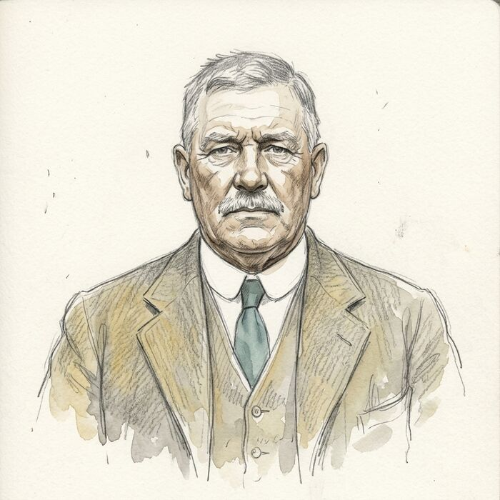
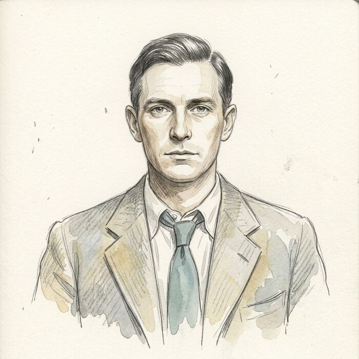
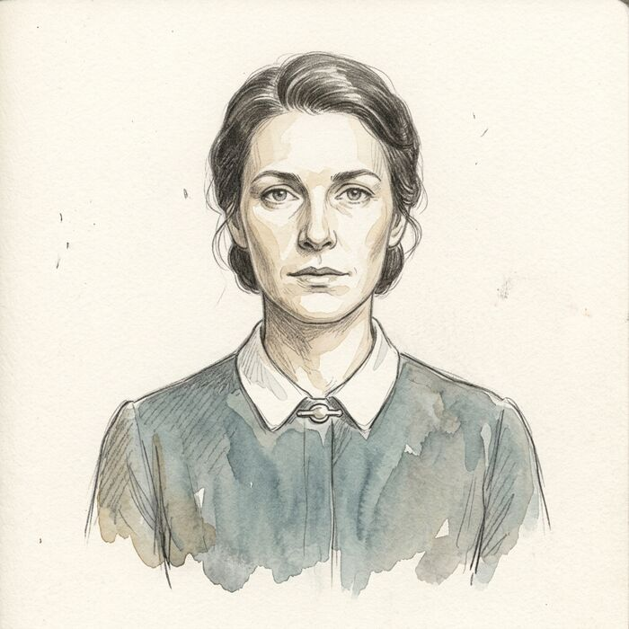
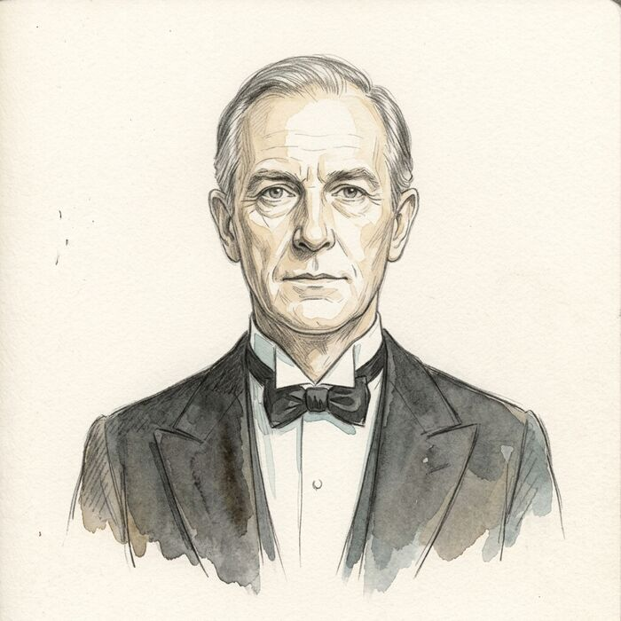
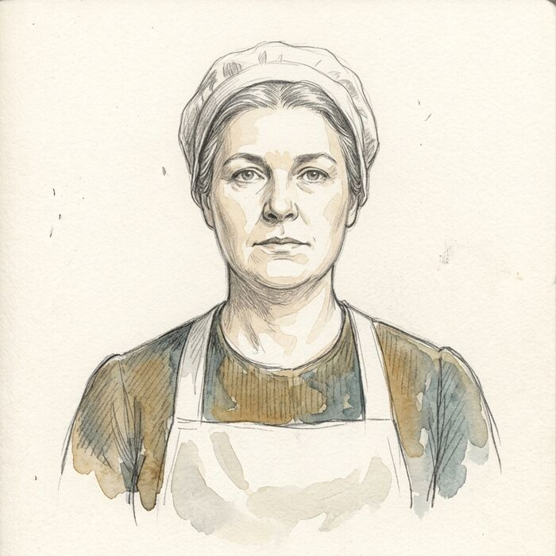
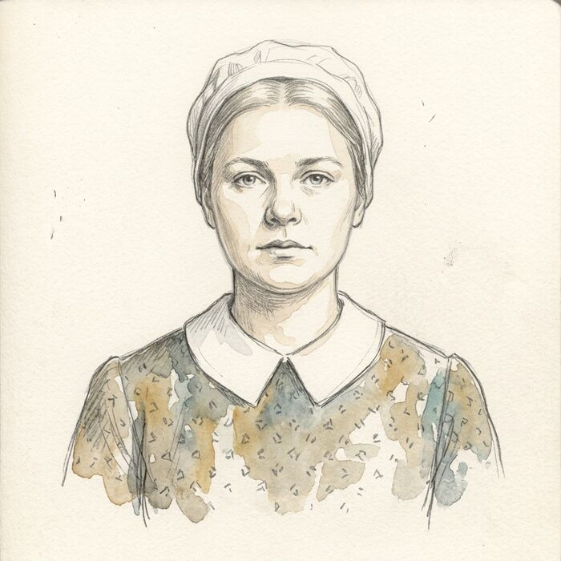
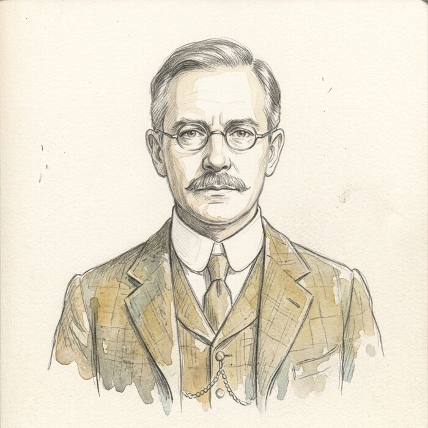

Wenford Police · Suffolk · March 1934
Everyone who was in the house, or near it, on the night of the 14th. Tap a face to see it larger.

Colonel Aubrey Stannard 61
Of Merrow Hall
Home that afternoon after three days in London. Dined with Dr Petrie. Last seen alive at 22:15, at his desk, writing. Found on the study floor at 07:05 on the 15th.

Edward Hallam 34
Nephew · arrested 18 March
The Colonel's sole heir. Living at the Hall since the autumn.
Room off the main stairs.

Margaret Wray 41
Secretary and companion
Nine years at the Hall. Opened the study door at seven on the morning of the 15th.
East wing, reached by the back stairs.

Thomas Corbett 58
Butler
Thirty-one years' service. Told a fortnight ago that he would be dismissed at Lady Day, without a pension. Locked up at 23:00.
Room off the back stairs.

Mrs Dunn 55
Cook
Took the Colonel his whisky at 22:15. Clearing the dining room at about 21:30.
Room above the front hall.

Alice Pike 19
Housemaid
Did the study grate on the morning of the 14th.
Half-landing of the back stairs.

Dr Julian Petrie 52
Village doctor
The Colonel's oldest friend. Dined at the Hall and left on foot at 21:15. The dog in the front hall knows him.
Wenford, a mile away.
The study window
Unlatched
The Colonel left it so every night, and it was known that he did. Three days of rain had left no ground to take a footprint. Nothing in the house was taken.
Ground floor, off the terrace.
{kind=link}
{kind=link}
{kind=link}
{kind=link}
{kind=link}
{kind=link}
{kind=link}